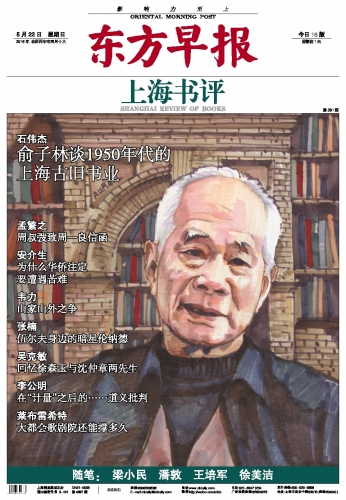
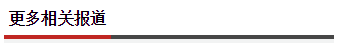
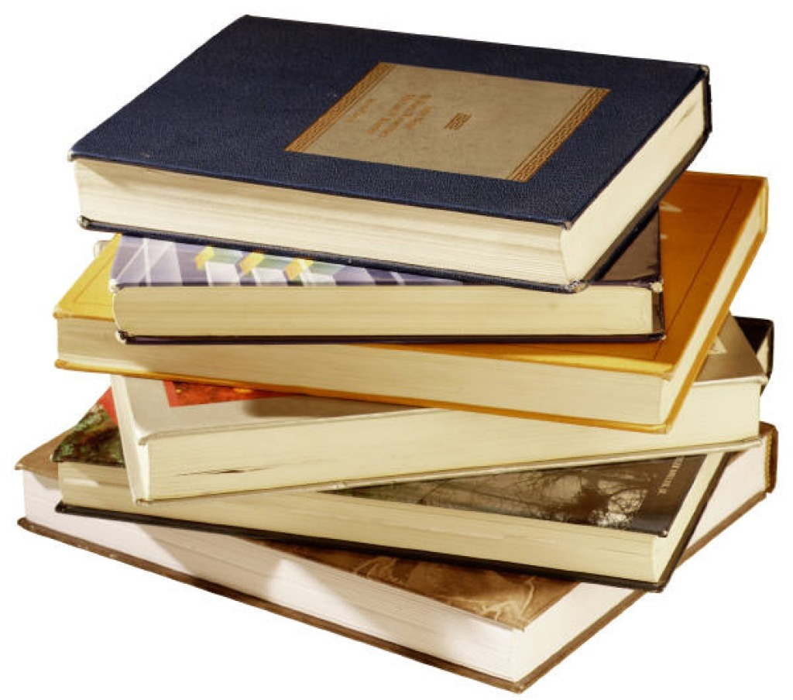
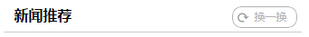

当前位置：首页>书坛新闻
俞子林谈1950年代的上海古旧书业
河北文艺网 2016-03-15
俞子林1947年来沪从事书店工作，曾任上海图书公司经理、上海书店出版社总编辑，经历了上海书业的公私合营、上海图书公司的历史变迁，对上海古旧书籍的出版和发行多有了解。访谈的最后，他直言：“我们这个古老的国家，应该有个像样的古旧书店。”
旧上海的书店业是怎样的？
俞子林：上海开埠以前，只是江苏省松江府下的一个滨海小县。开埠以后，外国人到上海开了墨海书馆,带来了近代印刷术，苏州、扬州、杭州的一些人也到上海开书店。最早是在河南路（当时称棋盘街）、福州路（俗称四马路）一带，因为离县城比较近。当然，福州路一带最早不是以文化业发展起来的，而是以生活娱乐业发展起来的。陈昌文的《都市化进程中的上海出版业（1843-1949）》对此有所描述。后来，南京路（俗称大马路）上建起了四大公司（先施公司、永安公司、新新公司和大新公司），并进一步聚集起其他公司、服务业，使南京路成了上海最繁华的中心市区。相应的，四马路的商业地位就减弱了，文化业却蓬勃地发展了起来。



林荣基声称在韶关被扣押 韶关图书馆
香港铜锣湾书店店长林荣基开记者会，指曾经被带到韶关扣押，期间被限制自由权利
习近平主席署名文章在波兰引起强烈
新华社华沙６月１７日电综述：叙友谊、促了解共创合作新篇——习近平主席署名文章在波兰引起强烈反响